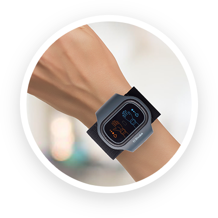

Как использовать корректор давления АВР-051?
- Примите удобное положение, расслабьте левую руку
-  Зафиксируйте аппарат на запястье и включите его
-
 Проводите процедуру от 1 до 3 раз в день по 6 минут
Проводите процедуру от 1 до 3 раз в день по 6 минут
Избавьтесь от гипотонии легко!
Корректирует
артериальное давление
Улучшает
самочувствие и сон
Повышает
работоспособность
Нормализует
работу сердечно-сосудистой системы
Стабилизирует
эмоциональное состояние
Аппарат зарегистрирован в качестве медицинского изделия
Рекомендовано к применению ведущими кардиологами ЕС
Результат от использования достигается к 5 дню терапии
Эффективность подтверждена клинически
поврежденные кровяные сосуды
Гипотония сама по себе не считается заболеванием, однако существенно портит жизнь человеку с низким давлением.
Постоянная слабость, сонливость, пульсирующая головная боль, внезапная тошнота, рвота, повышенная потливость и даже обмороки - все это частые спутники гипотоника.
Важно понимать, что при отказе от соответствующего лечения болезнь будет прогрессировать и снижать качество жизнь год за годом.
Обезвоживание организма до критического состояния
Резкая почечная недостаточность
Полный отказ работы почек
Кома
Артериальная гипотензия - не просто неприятный синдром. Это болезнь, которая, в первую очередь, опасна для мозга, сердечно-сосудистой и нервной систем. Низкое давление приводит к плохому кровоснабжению мозга, из-за чего происходит кислородное голодание. Коронарные артерии (артерии питающие сердце) в состоянии гипотонии не могут обеспечить достаточный кровоток сердечной мышце, на фоне чего развиваются заболевания, которые могу привести к летальному исходу.
Ишемический инсульт
Анафилактический шок
Нарушение сознания
Импульсы тока разной величины воздействуют на корешки спинномозговых нервов, тем самым тонизируют сосуды для лучшего кровообращения.
Сохраните его здоровым с АВР-051!Токовые терапии - это одна из современных процедур в традиционной медицине для лечения гипотонических болезней.
Когда импульсы тока начинают действовать, происходит возбуждение нервных волокон. Благодаря такому воздействию тока, в организме улучшается микроциркуляция и усиливается клеточное питание, сохраняющее строение и функционирование кожного покрова.
Импульсы тока разной величины воздействуют на корешки спинномозговых нервов, тем самым тонизируют сосуды для лучшего кровообращения.
Корректор давления стабилизирует артериальное давление до нормы посредством чрескожной электростимуляции на биоактивные зоны
Электромагнитные импульсы, которые исходят из аппарата, чрескожно воздействуют на кровеносные сосуды, укрепляя и очищая их стенки.
Аппарат АВР-051 легок и прост в применении. Это компактный прибор в виде наручного браслета, который поможет вам быстро снизить давление до нормы. После курса процедур вы заметите стойкий эффект.
Аппарат зарегистрирован в качестве медицинского изделия
Улучшение эмоционального состояния
Часто подавленность, беспокойство и нервозность - следствие нарушения баланса в организме и недостатка нейромедиаторов. Спазм сосудов мешает мозгу передавать нервные импульсы, они не доходят до клеток и жизнь кажется серой.
АВР-051 улучшает проводимость нервных импульсов и нормализует работу гормональной системы. Тело приходит в баланс на физическом и эмоциональном уровне.
Повышение работоспособности
Нет сил ни на что, кроме работы. Да и на неё их уже не хватает" - привычное состояние современного человека. Синдром хронической усталости - это сбой в регуляции вегетативной нервной системы. В организме нарушаются процессы торможения - значит, вы просто не можете отдохнуть.
АВР-051 востановливает физиологические процессы возбуждения и торможения нервной системы. Вы активны, когда это нужно, но всегда можете расслабиться и восстановить силы.
Нормализация сна
Ночью вы не можете заснуть, а днём боретесь с сонливостью. Постоянный стресс и переутомление провоцирует нарушения в работе нервной системы и, как следствие, бессонницу.
АВР-051 расслабляет сосуды и снимает напряжение, корректирует работу симпатической нервной системы.
Вечером вы легко засыпаете, а утром чувствуете себя отдохнувшим.
Снижение метечувствительности
Если "на погоду" болит голова, значит, вы метеочувствительны. Причина - в нарушении работы вегетативной нервной системы. При этом внешняя среда оказывает неприятное влияние на организм.
АВР-051 стабилизирует ваше собственное давление и настраивает правильную работу нервной системы.
Увеличение
продуктивности
АВР-051 корректирует функциональное состояние организма, кровообращение и питание органов кислородом.
Тело лучше работает - значит, вы чувствуете себя энергичнее. У вас больше сил для активной и яркой жизни.
Проводите процедуру от 1 до 3 раз в день по 6 минут
Процедуры электростимуляции, проводимые с помощью аппарата «АВР-051», показаны в комплексе с базисной медикаментозной терапией больным с заболеваниями сердечно-сосудистой системы
артериальной гипотензией
нейро-циркуляторной дистонией
ишемической болезнью сердца, стенокардией
заболеваниями и травматическими повреждениями сосудов
хронической сердечной недостаточностью
ангиоспазмами, облитерирующим эндартериитом болезнью Рейно
Синдром артериальной гипотонии – комплексное заболевание. Консервативное лечение нацелено прежде всего на устранение последствий. Оно не подразумевает отмены препаратов: начиная принимать их, вы на долгие годы оказываетесь на медикаментозной терапии. Препараты требуют индивидуального подбора и отягощены серьезными последствиями от длительного употребления.
Электростимулятор АВР-051 корректирует давление через действие на сосудистый тонус. Мягкая стимуляция поверхности кожи на запястье через серию импульсов тока нормализует тонус артерий, выравнивая артериальное давление. 14 дней применения дают решительный сдвиг в лечении гипотонии.
АВР-051 хорош для общего улучшения самочувствия. Улучшение кровообращения – это ощущение бодрости, улучшение работоспособности, повышения энергичности, и возможость избавиться от метеочувствительности.
Как специалист с многолетним стажем, я рекомендую электростимулятор АВР-051 к ежедневному использованию.
Во время перепадов давления я чувствую нехватку сил, энергия как будто куда-то уходит. После того, как я начал использовать браслет для лечения, то уже на вторую неделю ощутил прилив сил и бодрости. Приятно чувствовать себя здоровым!
С 14 лет страдала пониженным давлением, постоянно от этого не было сил и энергичности. Увидела у подруги браслет, решила заказать такой же. Удивительно, но мне стало лучше! Я носила его всего две недели, а работоспособность увеличилась в разы.
Как-то раз из-за упавшего давления потерял сознание в автобусе. После этого случая заказал аппарат для коррекции давления, чтобы больше такого не допускать. После одного курса восстановления с этим аппаратом врач отменил мне больше половины препаратов, без которых я не мог обходиться раньше.
Долгое время у меня ни на что не было сил, вечно чувствовала себя уставшей и мучилась от бессонницы. Даже подумать не могла, что такая проблема может быть из-за давления, а ведь я исправно пила таблетки! После того, как начала терапию с АВР-051, заметила улучшения. Сначала силы появились, спать лучше стала, теперь и давление выровнялось. Чувствую себя лучше, чем 20 лет назад!
Избавьтесь от гипотонии легко!
Корректирует
артериальное давление
Улучшает
самочувствие и сон
Повышает
работоспособность
Нормализует
работу сердечно-сосудистой системы
Стабилизирует
эмоциональное состояние
Аппарат зарегистрирован в качестве медицинского изделия
Эффективность подтверждена клинически
Результат от использования достигается к 5 дню терапии
Рекомендовано к применению ведущими кардиологами ЕС